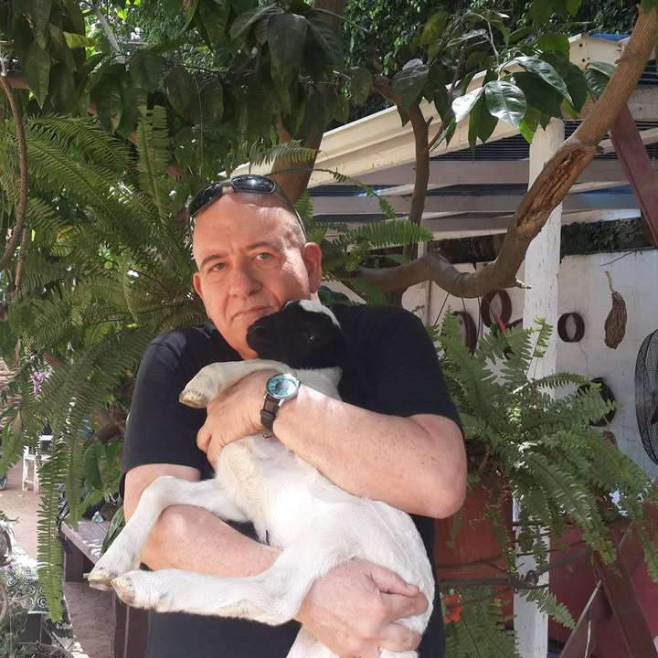

עיתונאי • סופר • מרצה
מזימה שקפאה בזמן מתעוררת לחיים.
מבוסס על אירועים אמיתיים מטלטלים - סיפור המתחיל ב-1945 בברית דמים חשאית בין קצין מודיעין בריטי לברון נאצי בפירנצה, ומתפרץ מחדש בשנות ה-80 בלב אירופה.
מסע של זהויות שאולות, מרדף חוצה יבשות וסודות משפחתיים הנחשפים על פני עשורים. מותחן קנוניה על הון, בגידה והצללים הארוכים של ההיסטוריה.
"ספר מרתק שכתוב היטב, זורם וקולח... עלילה שסוחפת את הקורא מהפרק הראשון ושומרת על מתח גבוה."
"שילוב בין ע